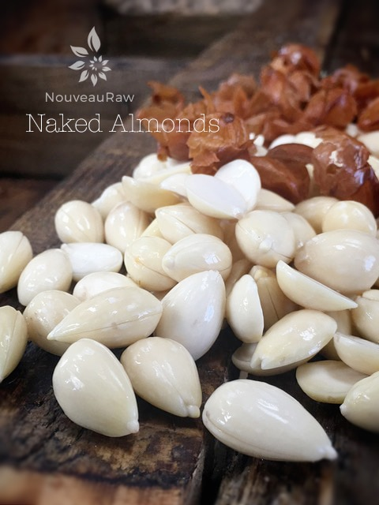
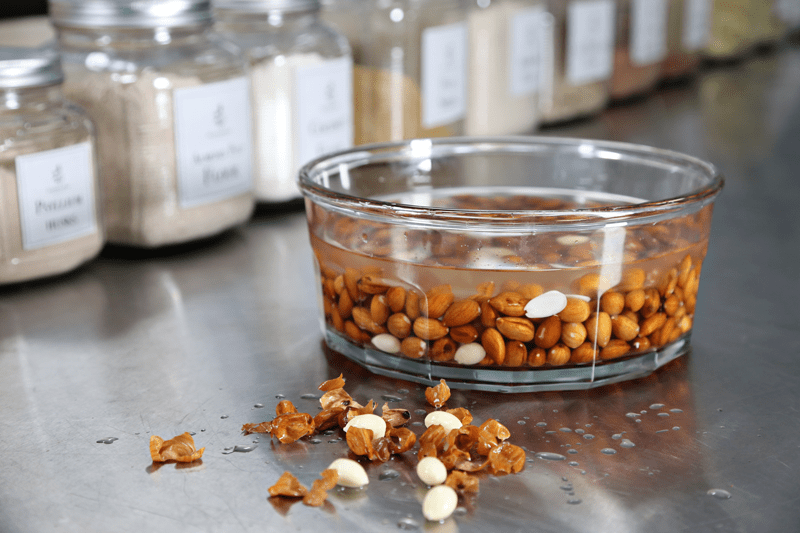

Almonds | Skins Removed

Ever seen a naked almond? I had to laugh because Bob and I have been watching the TV series, Naked & Afraid. A survival show where two people attempt to spend 21 days in harsh (putting it mildly) conditions… naked. They are allowed one survival tool.
Anyway, as I was popping the skins off of the almonds and occasionally one would shoot off into the distance. Bob asked just what the heck I was doing as one skid alongside him… I told him, “Sorry, my almonds are naked and afraid!” hehe, I hope you can follow my twisted sense of humor.
They are beautiful and creamy in color. It isn’t always necessary to undress your almonds, but there are times that it is called for. If you want to make a nut cheese that is blond in color or if you’re going to make a cookie that is blond in color, these are some possibilities.
This process is rather easy to do and somewhat therapeutic. Also, the skins have been known to cause digestion discomfort. So, if you find almonds hard to digest, take them one step further by removing the skins and see if it makes a difference.
Ingredients:
Preparation:
- Soak the almonds in a bowl for approximately 8 hours. Drain, rinse, and add fresh water every 4 hours.
- After they are done soaking, drain, and rinse thoroughly.
- Make sure that you remove the skins right after they are done soaking and keep them in the water while you are removing them. If the almond starts to dry, the skin will stick to the nut and won’t come off. If need be, you can add hot water to the bowl.
- Now comes the therapeutic part. Grab ahold of the almond on one end and pinch it, the almond will pop out of the skin.

© AmieSue.com